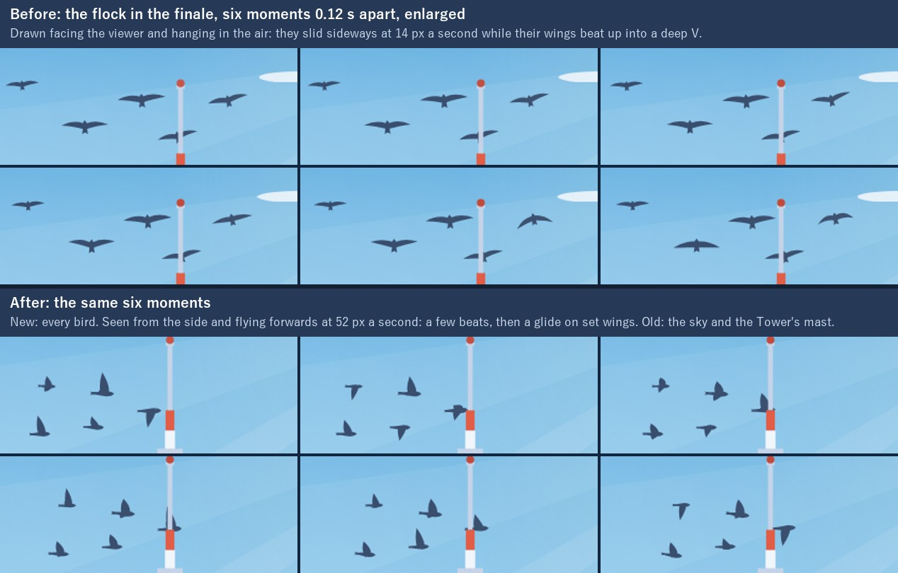
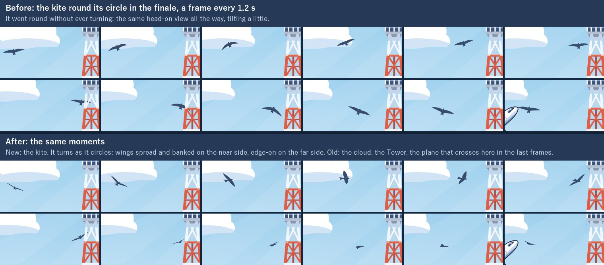
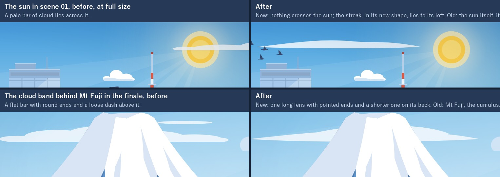
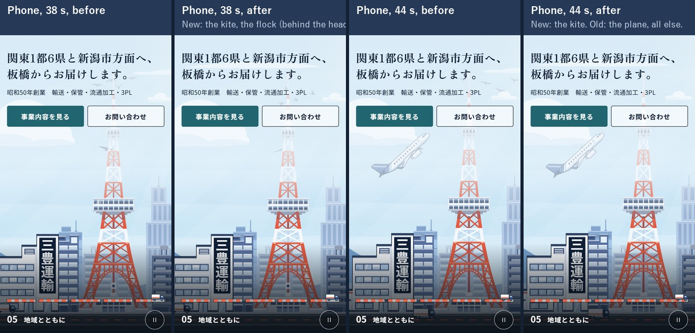

三豊運輸 hero remake: the birds and the sky
Two notes from watching the film end to end: the way the birds fly is a bit odd, and the sky and clouds need a polish so that everything is smooth and natural. This page shows what changed for each. Nothing else in the film was touched.
The whole film, recorded again with these changes in it, is on the film page. Every clip here can be dragged to any second.
1. The birds
What was odd. The birds were drawn facing the viewer, wings out to both sides, and they slid sideways across the sky at a walking pace, so they hung in the air. Their wings beat up into a deep V. And the kite went round its circle without ever turning: the same head-on view all the way.
What they do now. A bird goes where it points. The flock is seen from the side and flies forwards across the sky, the way the trucks drive. Each bird beats its wings a few times and then glides, on its own time; it rises a little while it beats and sinks while it glides. The kite really turns as it circles, so it shows its spread wings on the near side and goes edge-on on the far side.


In motion
- Where they fly. On a desktop the flock keeps above the headline while it is beside it, and it passes under the sun, not across it. In the finale a flock crosses about every 26 seconds, always nine seconds before the plane passes Tokyo Tower, so the two never meet.
- Cost. All the birds of a scene are still one shape on the stage, as before: no node was added.
2. The sky
I looked for whatever in the sky was not smooth or not natural, by eye and by measurement, and found three things.
The sun had a bar of cloud across it
A thin far cloud was laid across the sun's disc in every scene. At full size it read as a pale bar over the sun. Now the sun stands clear in every scene, and that cloud is a high streak to the sun's left.
The thin clouds were bars
The streak clouds were a row of low bumps on a level base with round ends, and one of them carried a loose dash above it. Each is now one long lens with a low uneven back and both ends drawn out to a point.

The clouds darted as the map drew back
I followed every cloud through the whole film. They drift evenly everywhere except one place: as the map drew back to show the finale (28.1 s), the finale's clouds ran 23 px in 0.4 s, fifteen times their own pace, and the light shafts swung into place. Now the finale's sky starts from rest at its own even pace.
The whole sky, before and after

Checks
- The sky's motion (a new check,
node tools/sky-motion.mjs round2, every cloud followed through 48 s): no jumps, and no cloud goes faster than its drift outside a camera move. Before: the dart at 28.1 s. - Do the clouds glide or hop? Measured on one cloud's edge at every 1/60 s: it moves 0.11 to 0.19 px each frame, never a whole-pixel step.
- No cloud below a roof (
cloud-check): passes in scenes 01, 02, 03 and 05. - Nothing frozen, nothing pops (
motion-check, all five scenes, to 49.5 s): 0 frozen steps, 0 pops. - Viewer: 0 console errors. Both scene changes still play as camera moves in the real player, at both framings. The clock player matches the site's player at both framings.
- Contrast: all 13 copy rows pass (the unfilled track fails, as on the original).
- Nodes per scene: 1483, 1494, 943, 945, 944: unchanged.
- The original and the website: the original copies are intact (7 of 7), the website folder is untouched.
Cost, measured in one sitting
| Whole film, phone at 2x, CPU 4 times slower | Original | Remake now |
|---|---|---|
| Frames a second (two runs) | 188.5 / 189.7 | 203.1 / 202.3 |
| Frame time, median | 5.1 / 5.0 ms | 4.4 / 4.4 ms |
| Frames over 16.7 ms | 0.2 / 0.1 % | 0.1 / 0.1 % |
| Frame time by scene, median of three runs | 01 | 02 | 03 | 04 | 05 |
|---|---|---|---|---|---|
| Original | 5.4 ms | 6.3 ms | 5.6 ms | 5.3 ms | 4.6 ms |
| Remake before this round | 5.3 ms | 5.1 ms | 5.3 ms | 4.1 ms | 3.7 ms |
| Remake now | 5.5 ms | 5.2 ms | 5.3 ms | 4.0 ms | 4.0 ms |
- What this round cost: the new birds are a longer shape to work out, about 0.1 to 0.2 ms a frame on the slowed phone in the scenes that have them. Scene 01 is level with the original (5.5 against 5.4 ms); the other four are ahead of it.
- What it saved: the finale's birds used to be worked out while the map hid them. They are not any more.
- These numbers are from this sitting only. The machine was quicker today than in the earlier sittings, so compare the rows, not the sittings.
- One thing I could not explain: one run of the viewer check out of ten reported a problem, and I had not kept its message. The nine runs after it were clean.
What I left alone, for you to say
- The big white clouds are as you accepted them. I looked for something wrong in their drawing and their drift and found nothing to fix. If the polish you meant was their shape, say so and I will show options.
- The kite and the plane cross the same patch of sky for about a second now and then, as they did before.
- The corners of the picture are darkened a little by a soft frame laid over the whole film, which also dulls a white cloud near the top corner. On a desktop that corner is under the pale wash behind the headline. Left as it is.
- The small jet in scene 03's sky never comes into view in the time the scene lasts. Left as it is.